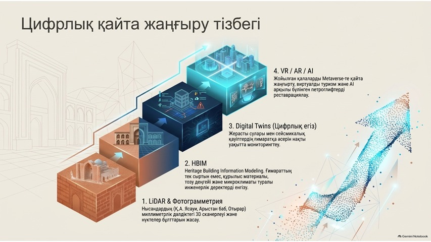
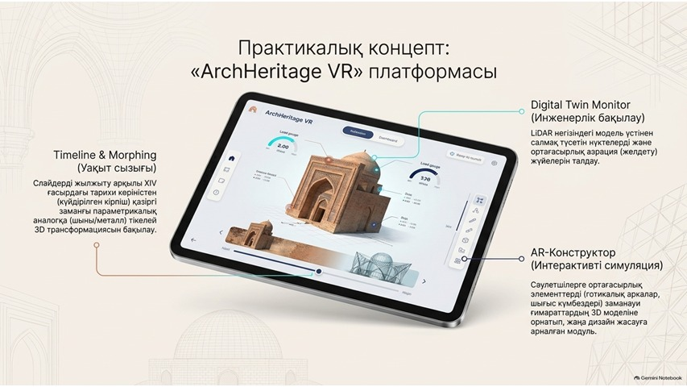

Ортағасырлық қала сәулеті мен қазіргі архитектураның сабақтастығы
Көне ескерткіштерді цифрлық технологиялар арқылы сақтау: 30 нысанның 3D картасы, әр қала мен кесененің параметрлік 3D моделі, цифрлық егіз және LiDAR сканерлеу.
Көне формадан заманауи шешімге
Ортағасырлық сәулетшілер қалыптастырған кеңістіктік және конструктивтік тәсілдер бүгінгі архитектурада жаңа материалдар мен параметрлік жобалау арқылы қайта жаңғырады. Әр карточкадағы мысалдың 3D моделін ашуға болады.
Екі карта: қалалар мен кесенелер
Жер бедері, спутник суреттері, Ұлы Жібек жолының бағыты және автоматты саяхат.
Цифрлық қайта жаңғыру тізбегі
Ескерткішті өлшеуден бастап виртуалды кеңістікте қайта тірілтуге дейінгі төрт саты. Әр саты «ArchHeritage VR» платформасында жеке модуль ретінде жұмыс істейді. Картаны басып, модульді ашыңыз.
LiDAR & Фотограмметрия
Нысандардың (Қ.А. Ясауи, Арыстан баб, Отырар) миллиметрлік дәлдіктегі 3D сканерлеуі және нүктелер бұлттарын жасау.
Платформада ашу →HBIM
Heritage Building Information Modeling: ғимараттың пішінімен қатар құрылыс материалы, тозу деңгейі және микроклимат туралы инженерлік деректерді енгізу.
Платформада ашу →Digital Twins
Жерасты сулары мен сейсмикалық қауіптердің ғимаратқа әсерін нақты уақытта мониторингтеу.
Платформада ашу →VR / AR / AI
Жойылған қалаларды Metaverse-те қайта жаңғырту, виртуалды туризм және AI арқылы бүлінген петроглифтерді реставрациялау.
Платформада ашу →«ArchHeritage VR» платформасы
Слайдерді жылжытыңыз: XIV ғасырдағы күйдірілген кірпіш кесене 3D кеңістікте заманауи шыны-металл аналогына айналады. Модельді тінтуірмен айналдыруға болады.
Уақыт сызығы
Слайдер арқылы тарихи көріністен заманауи параметрлік аналогқа тікелей 3D трансформация: тұрғызылуы → тозу → реставрация → шыны мен болат торлы аналог.
Digital Twin MonitorИнженерлік бақылау
Жүктеме нүктелері, датчиктер, жерасты суы мен жер сілкінісі сценарийлері және ортағасырлық аэрация (желдету) жүйесінің ауа ағыны.
AR-КонструкторИнтерактивті симуляция
Ортағасырлық элементтерді (сүйір аркалар, шығыс күмбездері, мұнаралар, терракота панельдер) заманауи ғимараттың 3D моделіне орнатып, жаңа дизайн жасау және GLB-ге экспорттау.
Жоба слайдтары

